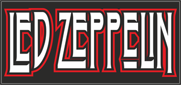

fue un grupo británico de rock fundado en Londres en 1968 por el guitarrista Jimmy Page, quien había pertenecido a The Yardbirds. La banda estuvo integrada por Jimmy Page en la guitarra, John Paul Jones como bajista y tecladista, el vocalista Robert Plant y John Bonham en la batería El nombre surgió en un principio como Lead Zeppelin (“zeppelin de plomo”), pero a recomendación de Peter Grant, el mánager de la banda, se suprimió la a de lead, para evitar problemas de pronunciación por parte de los hablantes norteamericanos, ya que las vocales ea se pronuncian como una i en el inglés
Rock and Roll
It's been a long time since Irockandrolled,
It's a longtimesinceIdid the Stroll
. Ooh, letmegetitback, let me get it back,
Letmegetitback , whereI from.
It'sbeen a long time, been long time
,Been a long lonely, lonely, lonely, lonely, lonely time.
It's been a long time since the book of love,
I can't count the tears of a life with no love.
Carry me back, carry me back,
Carry me back, baby, where I come from.
It's been a long time, been a long time,
Been a long lonely, lonely, lonely, lonely, lonely time.
Seems so long since we walked in moonlight,
Making vows that just can't workright.
Openyourarms, opens yourarms,
Open your arms, baby, let my love comerunning in.
It's been long time, been long time,
Been long lonely, lonely, lonely, lonely , lonelytime.
It's been a long time since the book of love,
I can't count the tears of a life with no love.
Carry me back, carry me back,
Carry me back, baby, where I come from.
It's been a long time, been a long time,
Been a long lonely, lonely, lonely, lonely, lonely time.